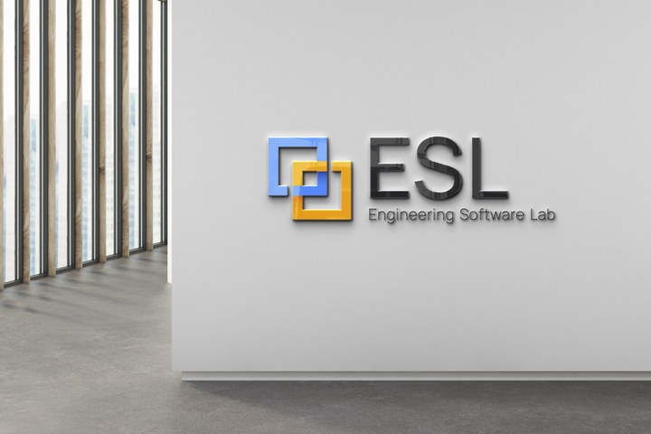

1
Parsing
Builds structure from declarations, expressions, statements, types, scopes, templates, and control constructs.
Question: What code constructs exist?

ESLTechnical explainerUsually it cannot hide valid C/C++ syntax from the frontend parser. But parsing the program is not the same as proving every runtime value, resolving every indirect call, or recognizing malicious intent.
Builds structure from declarations, expressions, statements, types, scopes, templates, and control constructs.
Question: What code constructs exist?
Reasons about values, aliases, call targets, memory state, control paths, and data flow.
Question: What can this code do?
Checks the model against enabled Parasoft, CERT, CWE, MISRA, AUTOSAR, or custom rules.
Question: Is it a configured violation?
Code can parse perfectly while a runtime value or indirect call target remains unknown.
Parasoft describes C/C++test as combining pattern-based analysis, control-flow and data-flow analysis, and abstract interpretation.
Obfuscation rarely makes C++ invisible to the parser. It can make the semantic model less precise.
The mechanism can be visible while the concrete command, API, payload, or intent remains hidden.
char command[4]; command[0] = 'c'; command[1] = 'm'; command[2] = 'd'; command[3] = '\0'; run_command(command);
"cmd".unsigned char encoded[] = { 0x39, 0x37, 0x3e, 0x74, 0x3f }; xor_decode(encoded, sizeof encoded, runtime_key()); run_command( reinterpret_cast<char *>(encoded));
using Fn = void (*)(void *); HMODULE mod = LoadLibraryA( "kernel32.dll"); FARPROC raw = GetProcAddress( mod, decode_api_name()); Fn operation = reinterpret_cast<Fn>(raw); operation(buffer);
unsigned state = 0x31U; for (;;) { switch (state) { case 0x31U: prepare(); state = 0xA7U; break; case 0xA7U: state = check() ? 0x19U : 0xE2U; break; case 0x19U: perform(); return; default: decoy(); return; } }
void decode(const char *input) { char local[16]; strcpy(local, input); // Unbounded copy remains unsafe transform(local); }
auto bytes = download(server_url); decrypt_in_place(bytes, machine_key()); void *mem = allocate_executable( bytes.size()); memcpy(mem, bytes.data(), bytes.size()); invoke(mem);
if ((x * x) >= 0) { real_code(); } else { junk_code(); }
Obfuscation analysis must respect the exact language type and compiler model—not informal mathematics alone.
Parasoft can identify unsafe or policy-breaking mechanisms. Intent requires context and corroborating evidence.
Obfuscation normally cannot hide valid C/C++ structure from Parasoft’s frontend parser. It can still conceal concrete values, indirect call targets, runtime payloads, and malicious intent from bounded static analysis.
Presented by ESL · © 2026 ESL · Presentation code and content licensed under the MIT License. ESL logo credited to ESL. Parasoft and its logo are trademarks of Parasoft Corporation and are used for identification.